「あー夏キャンプしたい！」
2022年12月に誘われるがまま初めてのキャンプをしてからというもの、それから半年も経たない翌年5月には自分からそんなことを口走っていた。
前回のキャンプでは日本の名湯にも数えられる鬼怒川温泉の街々を素通りし、普段あまり見かけることのない80Lのキャンプバッグを背負い、徒歩でキャンプ場を目指す男2人組というのは、さぞ人目を引いたことだろう。
https://note.com/kaito0589/n/n0436ad051e02
「来月の土日空けといて！夏キャン行くぞ！」
気づいたら、そんなLINEを相棒宛に送っている。
皆さんは信じられるだろうか。ほんの1年前まで、休みといえば家で映画鑑賞かゲーム、誰かと会う時でさえせいぜい近場の居酒屋か喫茶店くらいしか外出をしない男が、あろうことか自らキャンプを企画し当日のシミュレーションまで念入りに行う様を。或いは、手練れのキャンパーよろしく“夏キャンプ”を“夏キャン”と言っちゃうほどのめり込んでいるこの様を。
そして、本来であれば順番は逆なのであろうが、僕はキャンプ場を予約してすぐにキャンプ用品をネット通販で一括購入した。
実は前回の初キャンプ時に持参した諸々の道具たちは全てレンタル品だったのだ。実際に一度キャンプをすることで使用感は分かっており、しかもそれが良かったので、レンタル品と同じ寝袋やアウトドアチェア等を楽天市場で買い揃えた。ちなみに翌月、かつてないほど楽天ポイントが入ってきたことは未だに強烈に覚えている。
そんな風にして準備は万端。ワクワクしながら時は経ち、当日。今回も安定の電車旅。
相棒とは新宿の小田急線ホームで待合せをし、そのまま快速急行で新松田を目指す。
合計80分ほどの乗車だったが、相棒との話に花が咲きあっという間に目的地へ。
そこから当初はバスの予定だったけど、「ちょっと贅沢しね？」と相棒の指差す先には空車のタクシー。
僕は村上春樹風にいうと「やれやれ」といった表情でタクシーに乗り込む。「意外と乗り気やないかい！」とツッコミを入れながら相棒は笑う。
山道を走ること数十分。ついにキャンプ場に到着！
混み合う受付の中チェックインを済ませ、場内の地図をもらう。そして、思わず言葉を失った。
ここのキャンプ場、想像してたよりデカいやん！
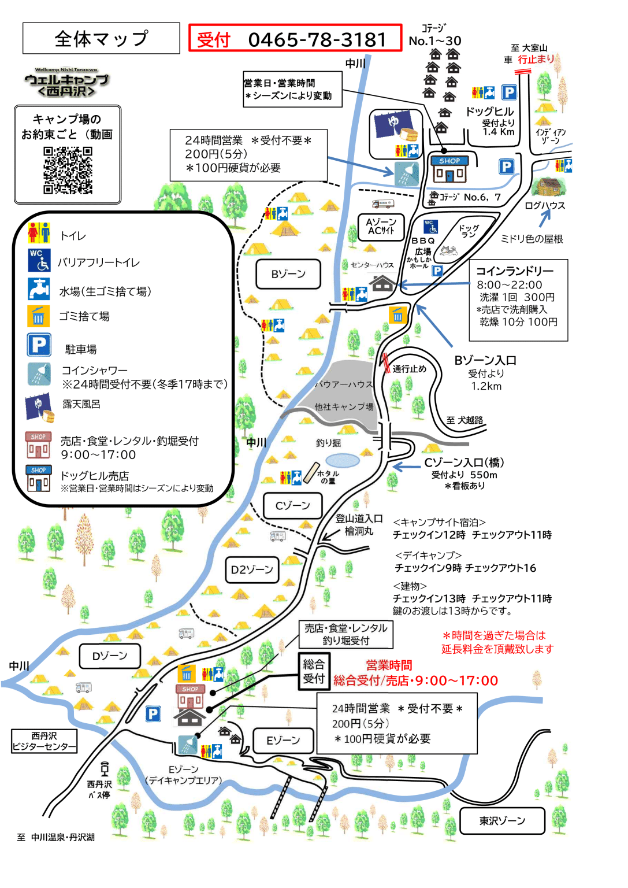
我々が案内されたのはBゾーン。上の地図を見てもらっても分かる通り、総合受付所からまあまあ遠いことが一目瞭然。距離にして約1.5㎞。実に20分ほど歩く場所にあったのだ。
「やれやれ……」
受付所の外で待つ相棒に地図を渡し、ついそんなことを口にすると、彼は何も言わず無言で地図を見つめている。
いや、ほんまに「やれやれ」思うのやめて。表情のない絶句が一番きついんよ。。。
じっとしていても始まらない。そこからヒーヒー言いながらBゾーンを目指し歩く。
セミはやかましく鳴き、灼熱の太陽は「よお！ご無沙汰やね！元気してたー！？」といった口調ではしゃいでいる。
おのれ……待っておれよ。この恨み、Bゾーンに着いたら晴らしてやるからな！！！
(※この記事を書いている最中に思い出しましたが、そもそもBゾーンで予約したのは他のだれでもない自分自身でした。希代の愚か者とは僕のことです)
汗がこれでもかと噴き出し、「ああ…もうほんとにダメ。クラクラしてきた」などとのたうち回っていると、相棒が言った。
「おい！あれを見ろ！あの橋を渡ればすぐだ！」
いつの間にか先導してくれていた相棒が声を出している。
「なんだと！」と、それはもはやコントさながらに前を向く。すると、そこには小橋が。「よし！もうちょっとや！」と再度気合を入れ直し、我々は重い足を引きずりながら橋を渡る。
そして、橋を渡った先に先ほど案内された区画ナンバーの看板を見つけると、相棒は一目散に走っていった。
「着いたどー！！！」
普段はそんなことしないけれど、僕も気づけば走っている。
「ついに…！ここが…！ここが我らのオアシスやー！！！」
(※オアシスではなくキャンプサイトです。彼らは幻覚を見ています)
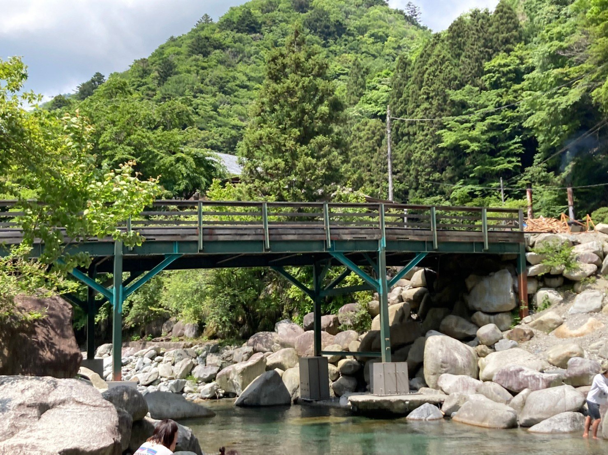
「ふー。ちょっと休憩ね」
バッグを下ろし、体を労わる。あらゆる関節がぽきぽきと音を鳴らすと、電池が切れたかのように、その場にへたり込んだ。
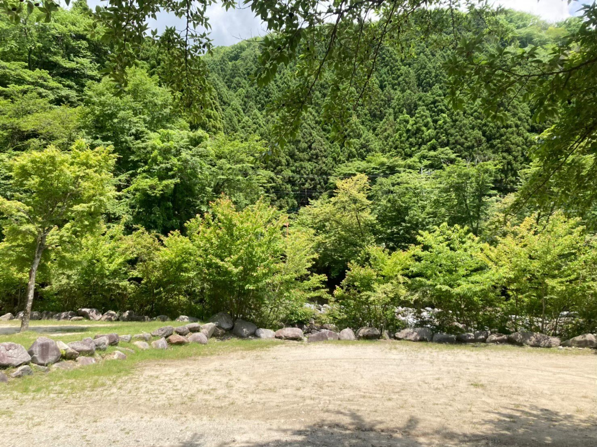
あんなに念入りにシミュレーションしたというのに、まさかキャンプ場内で一番体力を使うはめになるとは。ある一定以上の下調べは意味を成さないな(※いや、完全に準備不足です)と思いながら空を眺める。
それにしても、今日はなんていい天気なんだ…！ありがとう太陽🌞君がいてくれるから、こんなにも清々しい風が吹くってもんだよ。
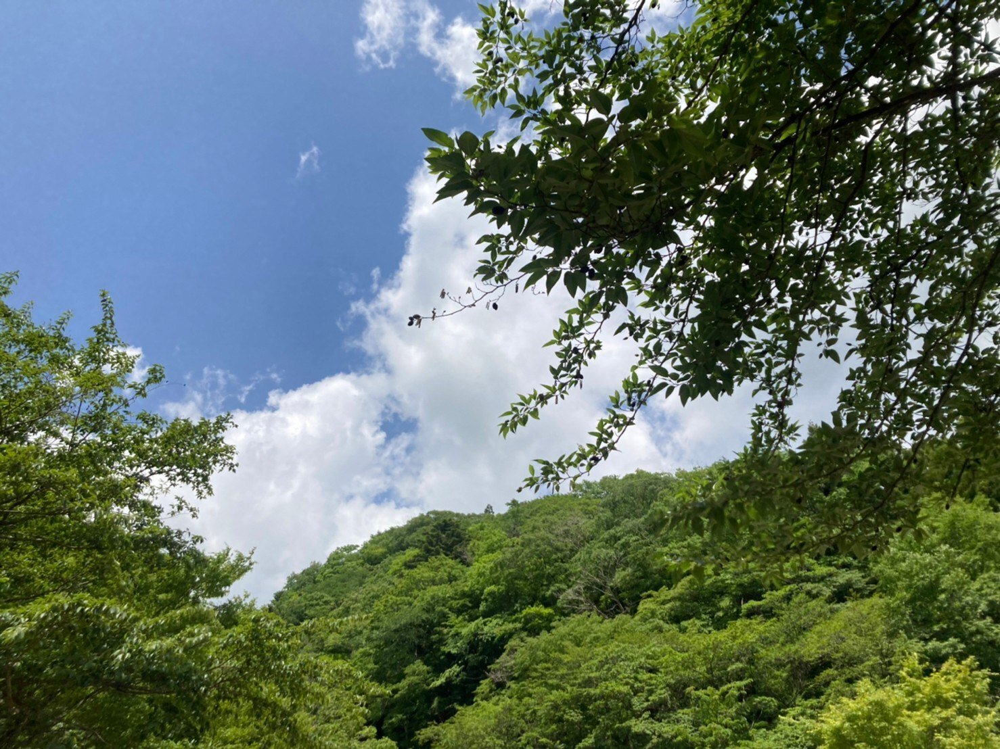
しばし体を休めたところで、我々はアウトドア用品を取り出し、それぞれ準備に取り掛かる。
テント設営、焚き火のための薪割り、今晩の食料確認。今回が2回目のキャンプにもかかわらず、それは慣れた手つきそのものだ。
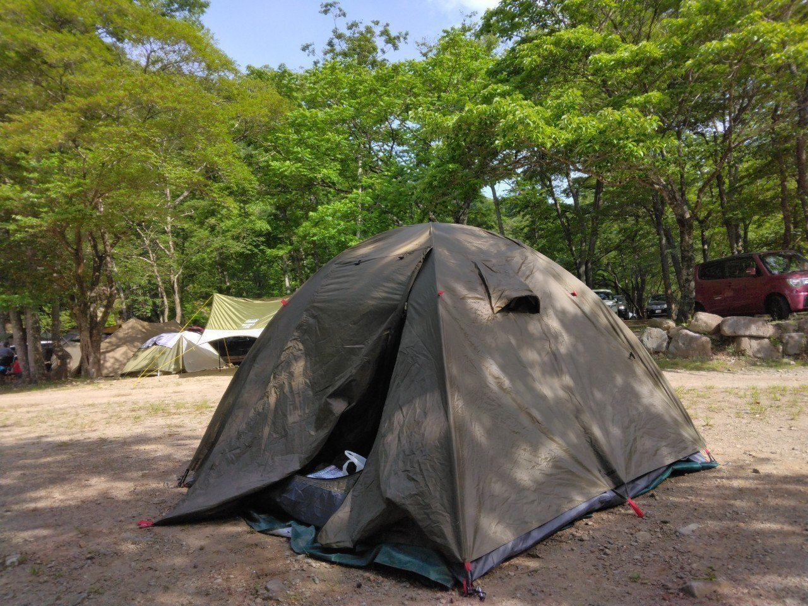
一通り準備を済ませた後は、近くの温泉でリフレッシュ。肝心の写真を撮り忘れてしまったが、ここの温泉最高です！
汗も流せてきれいサッパリ。すっかり体力が回復したのか、二人でキャンプ場内を散策。自然に溢れたよき場所でした！
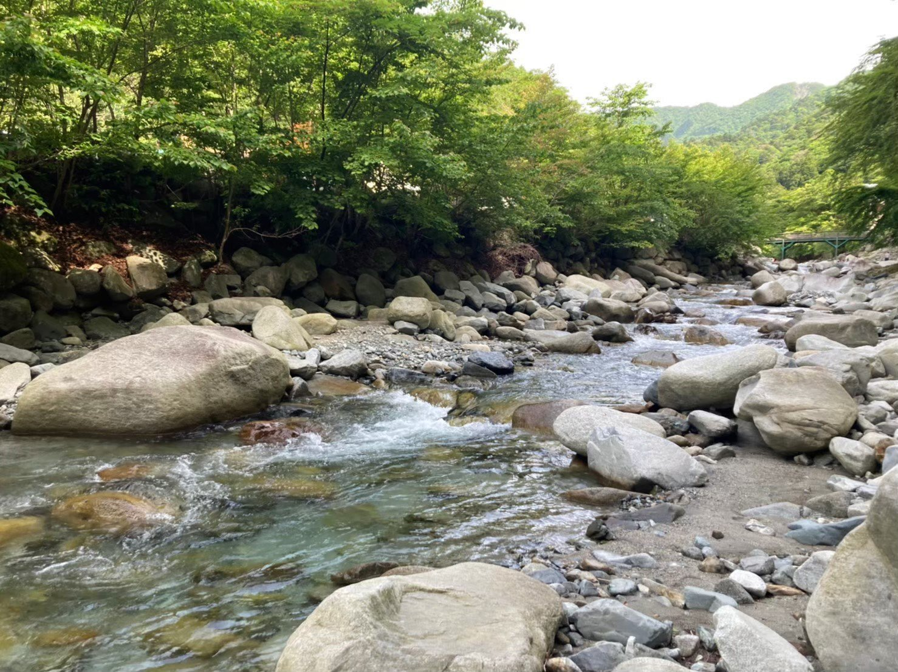
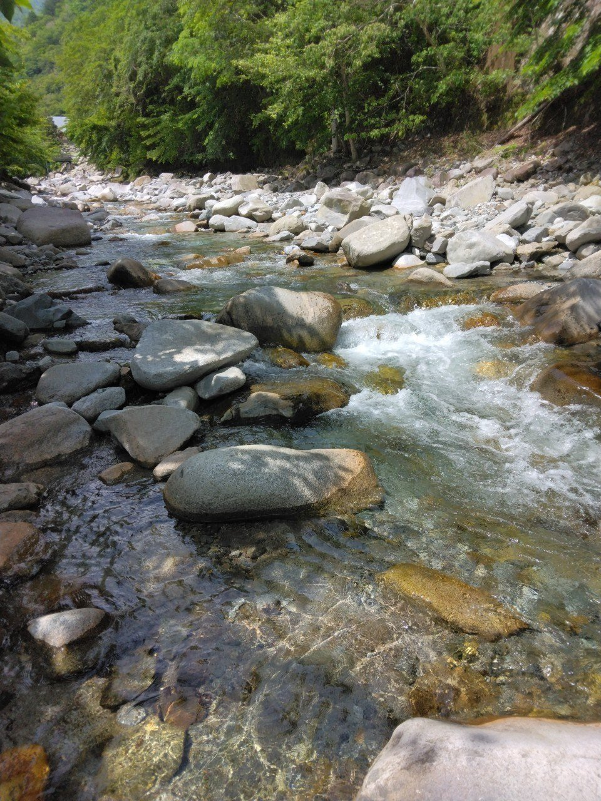
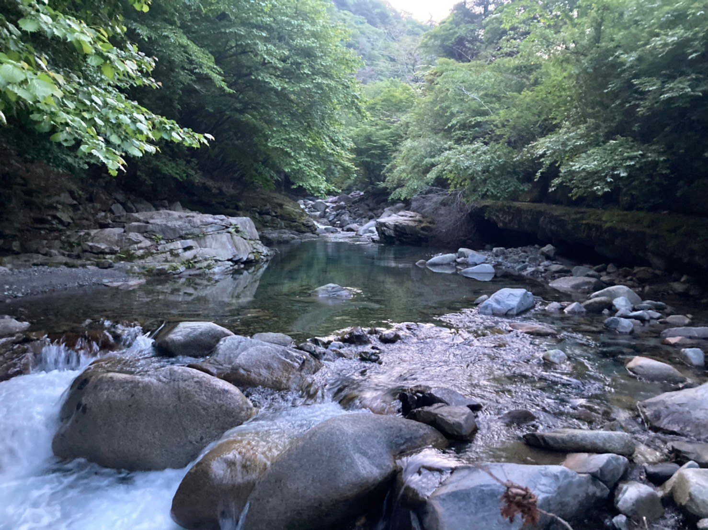
歩き疲れたタイミングで自分たちのテントサイトへ。そして、ちょっと早いけど、ビールをプシュッ！
まずは漬物をつまみながら乾杯！あ～ビールが染みわたる～。
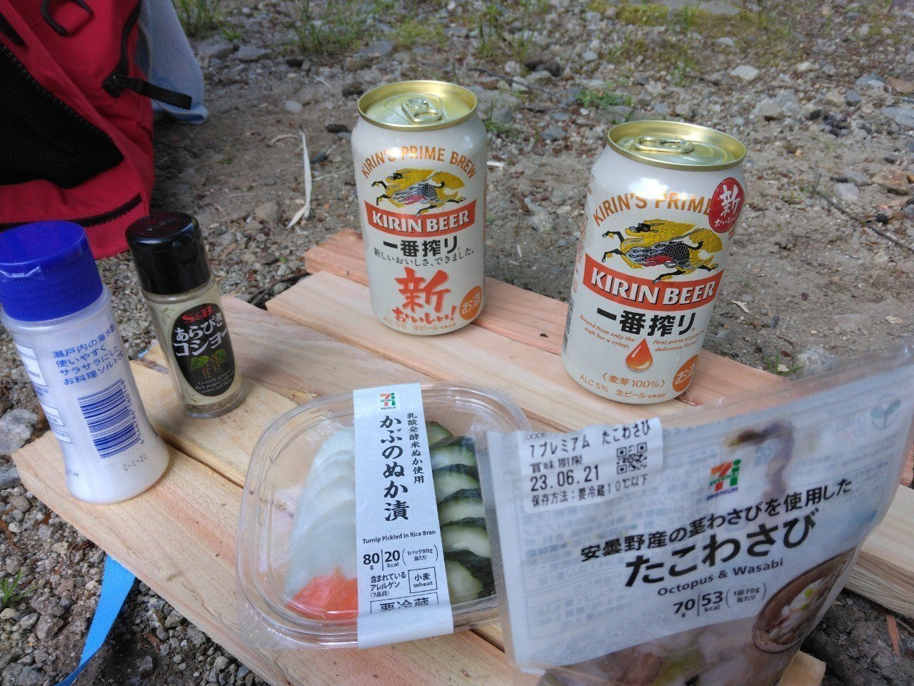
気づけばビールをぐびぐび。お互い3缶目に突入したところで、体も心も火照ってきたため薪に火をつける。その火で相棒の持ってきた肉を焼き、堪能。今回も最高のキャンプ飯を味わえた。
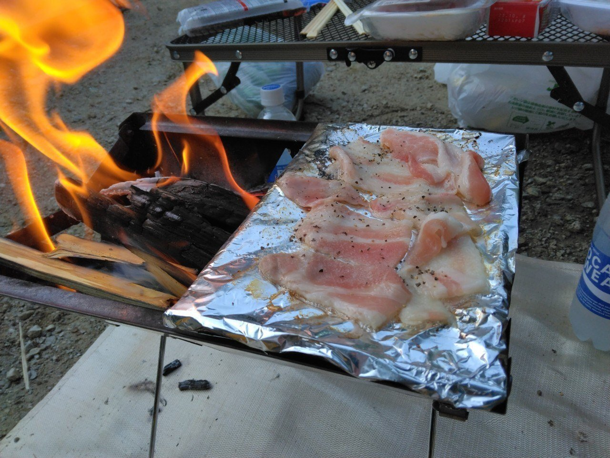
その夜は、お互い酔いが回っていたこともあり早めに就寝。
確か日本酒のボトルを開けた気がするが、その後の記憶がない…(そして、当然写真もない…笑)
翌朝。
少し早めにチェックアウトし、新松田駅前の小洒落た飲食店でランチ。キャンプ飯もいいけど、たまには外食もいいよね！
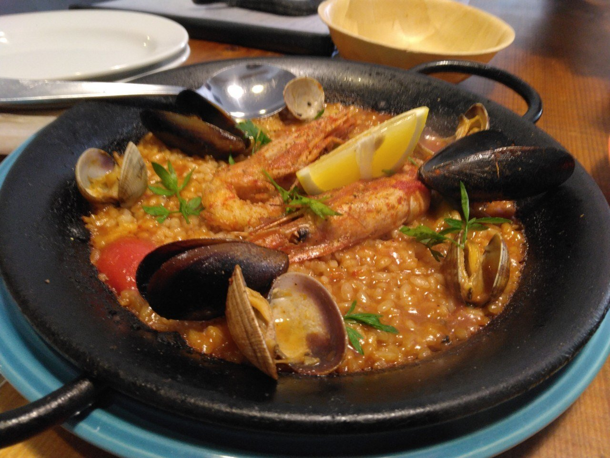
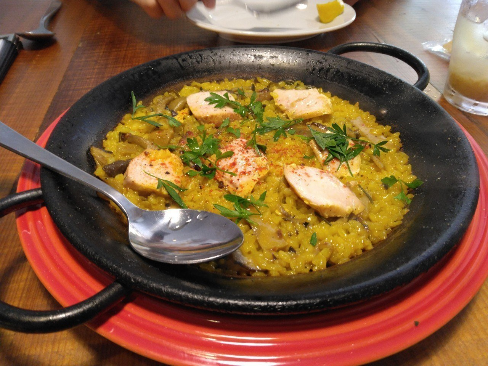
最高に美味な料理を味わい、心身ともに大満足。
相棒と次回のキャンプ候補地について色々話せた帰りの電車含め、今回も最高のキャンプ旅でした。
ということで。
季節外れの夏キャンブログ。今回はここでお終いです。実はこの後も相棒とキャンプに行ってきたので、頃合いを見てまた書きますね！
最後までお付き合いいただいてありがとうございました！
【今回訪れたキャンプ場】
ウェルキャンプ西丹沢(神奈川県足柄上郡山北町中川868-1)